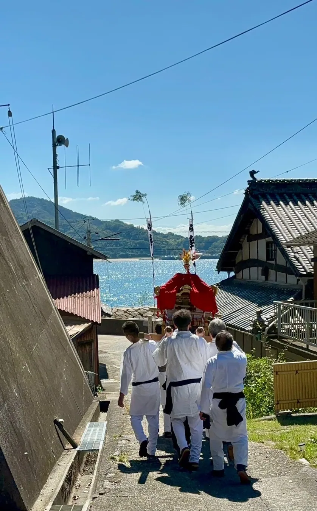

04 / COMMUNITY
鵜島の例大祭
神輿が出て、人々が集まる。島の大切な行事の一つです。

島の人々が集まる日
例大祭には、島の人々が集まり、神輿や行列などの行事が行われます。写真からは、世代を超えて集う人々の姿が伝わります。


島外の方も参加できます。日程や参加方法は事前に地域の案内をご確認ください。
もう少し、島を歩いてみる？
鵜島の風景や物語を、ほかのページでも紹介しています。
鵜島のトップページへ ↗ISLAND PHOTO JOURNAL
祭りの日の記憶